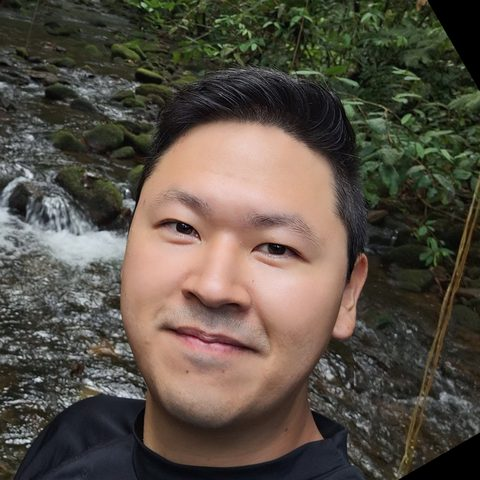
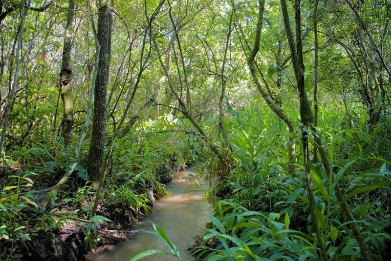
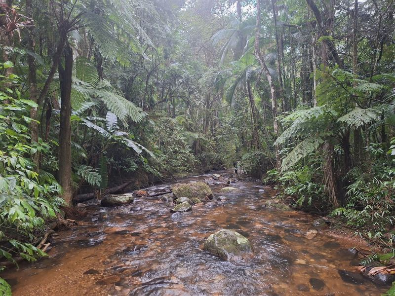
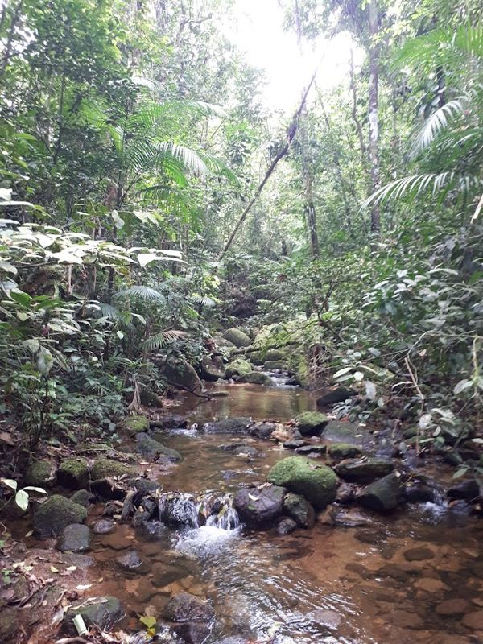
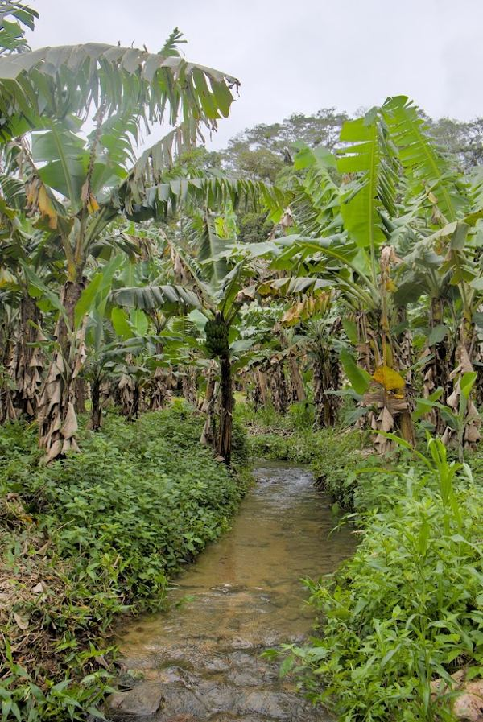
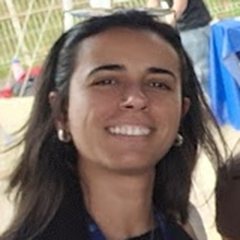
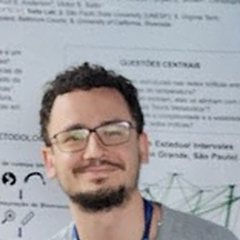
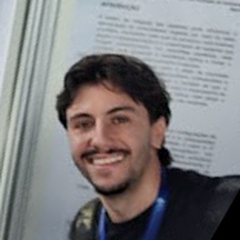
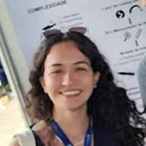

From Atlantic Forest headwaters to large rivers, reservoirs and wetlands, we study how climate change, biological invasions, urbanization and land use reshape freshwater biodiversity, food webs and ecosystem functioning.

How warming, invasions, urbanization and land-use change alter which species persist in freshwater ecosystems, and how stable those communities remain.
How body size and species interactions mediate the way energy and matter move through freshwater communities, using network and size-spectrum approaches.
We combine field surveys, quantitative analyses, computational modeling and mesocosm experiments to test mechanisms behind the patterns we observe.

InlandAgricultural streams in inland São Paulo state.

InlandForested headwaters in continuous Atlantic Forest.

CoastalCoastal Atlantic Forest streams with low human impact.

CoastalCoastal streams draining banana plantations.
Inland vs coastal, preserved vs impacted: a crossed design to separate regional context from human impact.
Assistant Professor at UFSCar. I integrate community ecology, ecosystem ecology and network approaches to understand how freshwater communities respond to global change. This work depends on the curiosity and creativity of outstanding students and collaborators from Brazil and around the world.




Full list on Google Scholar.
We welcome undergraduate, master's and PhD students and postdocs interested in freshwater ecology, food webs and global change. Get in touch with a short note on your interests.